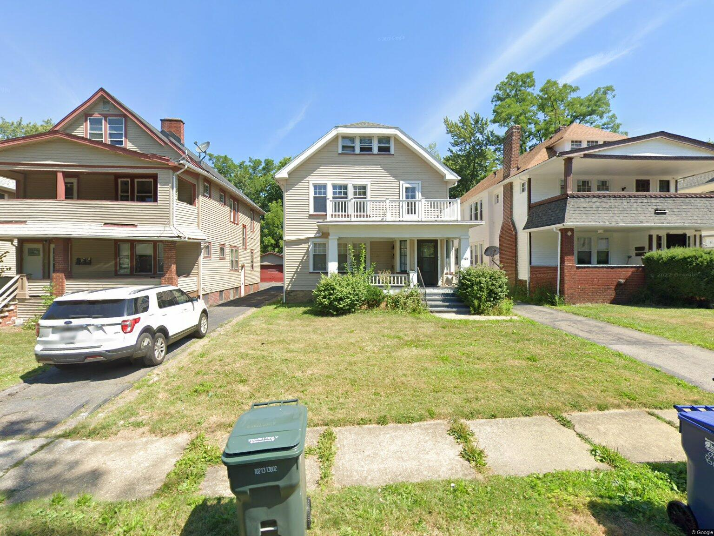
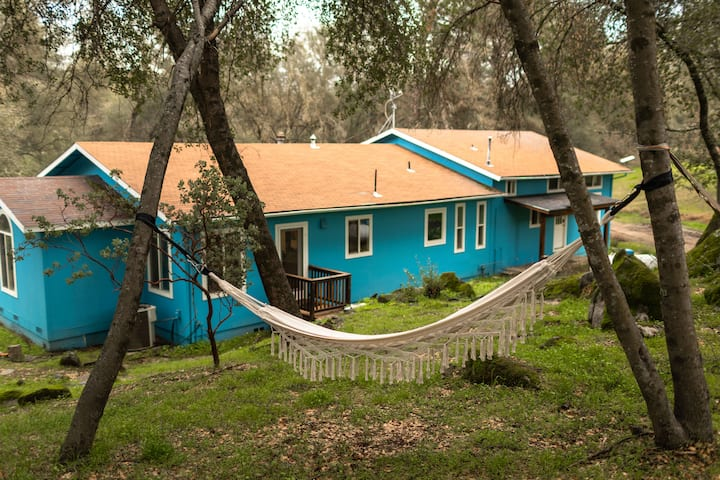
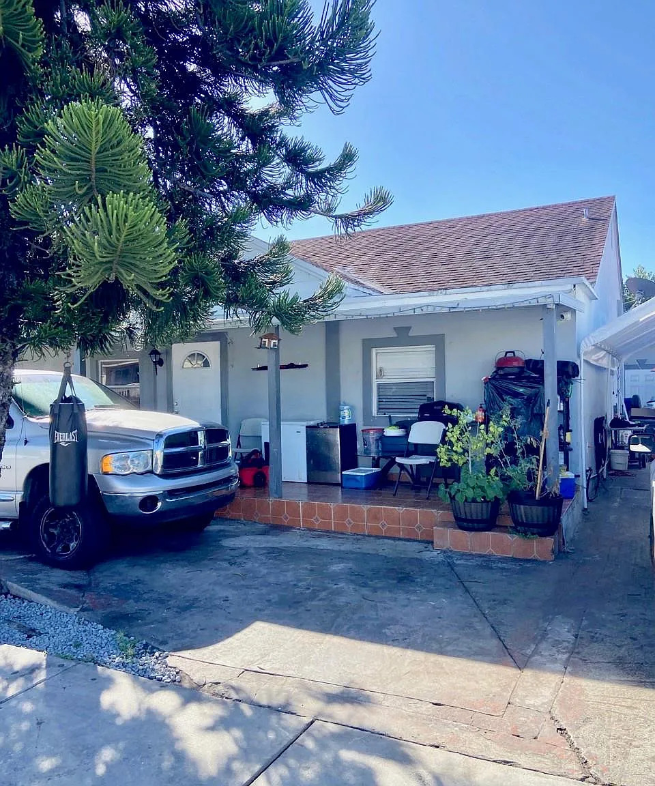

Market I
Cleveland
Ohio · Midwest
TypeMultifamily
StrategyLong-term rental
ThesisCash flow · Value-add
Data Science · Real Estate
Thirteen years in data science and AI. Seven years investing in real estate. A twelve-unit portfolio across four markets, built alongside a career at Meta, Amazon, Uber and Realtor.com.
I spent four years inside the data infrastructure of the largest housing marketplace in the United States. Now I use the same toolkit on my own balance sheet, and I write about what the numbers actually say.
About
There are a great many real estate investors who have never built a model, and a great many data scientists who have never signed a lease. I sit in the narrow overlap, and it shapes everything about how I operate.
For nearly four years I led data science for the mobile experience at Realtor.com, running more than two hundred experiments on how Americans actually search for a place to live. That work gave me an unusually direct view of housing demand — not the version in the headlines, but the version in the clickstream.
I now build LLM and machine learning systems at Meta, after doing the same at Amazon on fulfillment network design, at Uber on a $100M fleet incentive program, and at Ola where I established the analytics function for one of India's largest ride-hailing markets.
Alongside all of it I've been buying and operating residential property since 2019 — long-term rentals in Ohio and Florida, a short-term rental in the Yosemite gateway, and residential holdings in India. Every acquisition goes through the same discipline I'd apply to a production model: price the risk deliberately, underwrite on evidence rather than narrative, and stress-test before you bid.
I partner with operators and allocators who value data, transparency, and a long time horizon.
Method
The same quantitative discipline I use to ship production machine learning, translated into underwriting.
Portfolio
A diversified footprint across US cash-flow markets, a destination short-term rental, and international exposure — each selected through the same underwriting discipline. Markets are named; specific addresses are not, out of respect for tenant privacy.



Track record
Contact